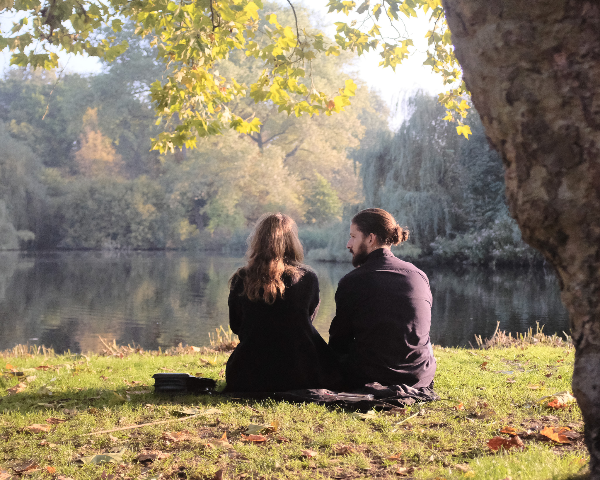

Is the cognitive limit on social relationships a real biological constraint or a statistical artifact? A critique suggesting social layers might be artifacts of the fitting, not the brain.
Compare stylised tax schedules against Ireland's current income tax shape across rates, net income, and working-time views.